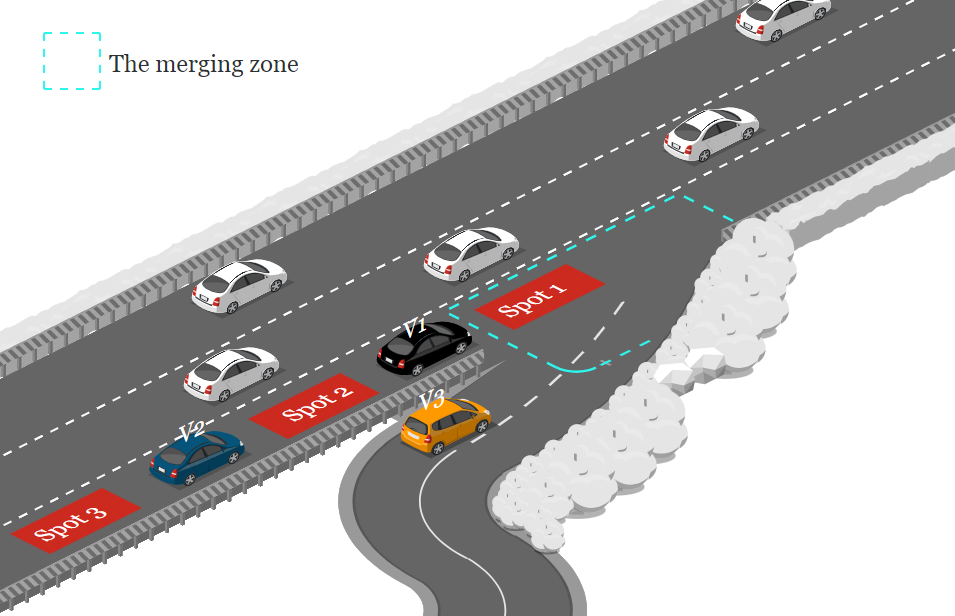
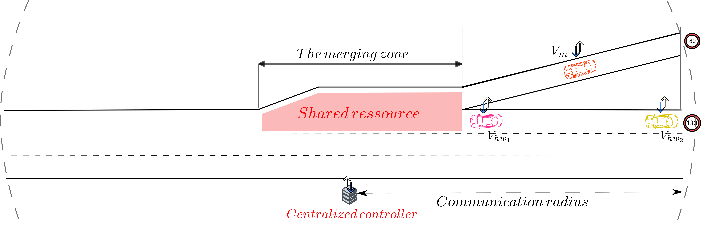
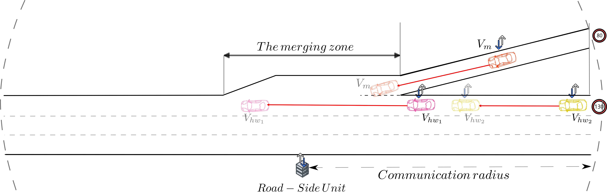
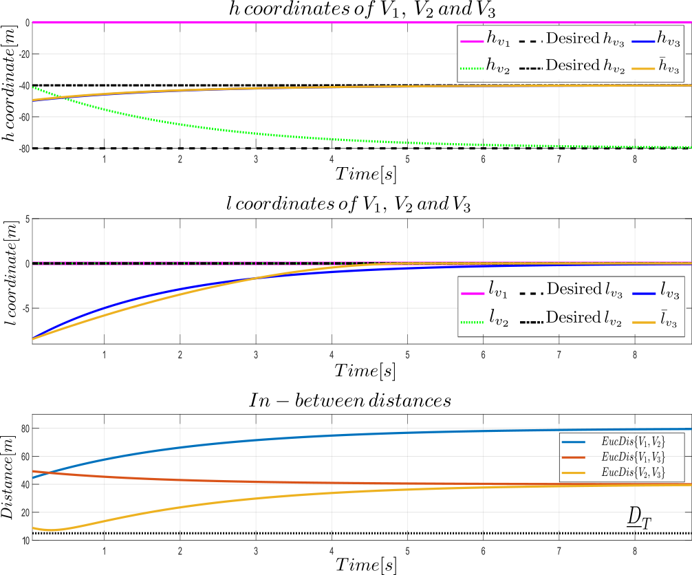
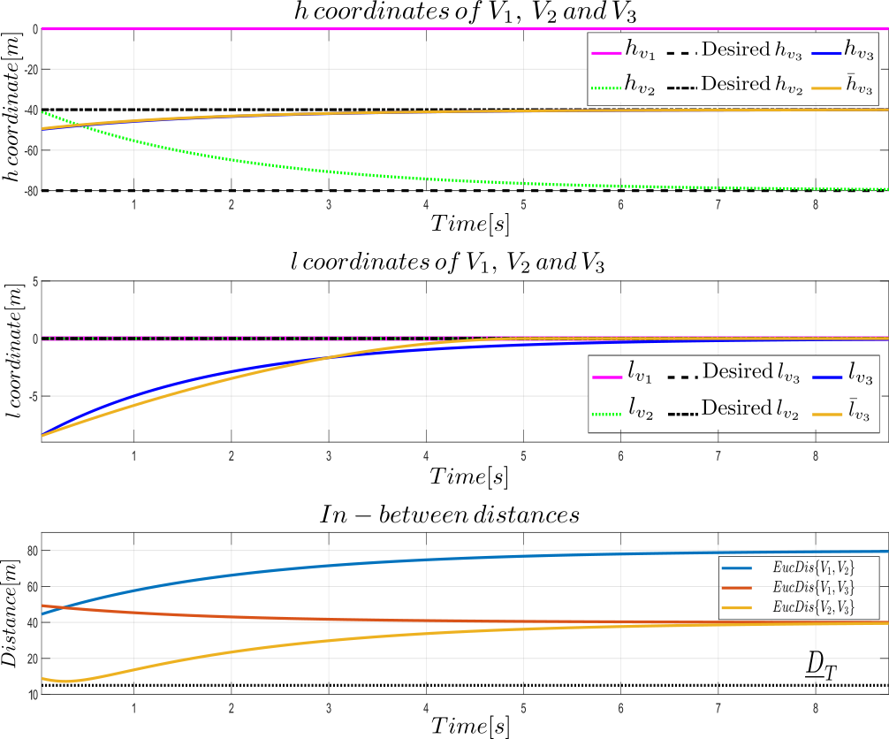

Centralized reservation-based scheme strategy for on-ramp merging on highway
Safe and Energy Efficient Decision/Control Architecture for a Formation of Multi-Vehicle System in Dynamic Environment
Wednesday, January 10th, 2024
Heudiasyc - UMR CNRS 7253 - Université de Technologie de Compiègne
Motivations
Motivations
From human driven vehicle to self driven vehicle
According to the 2023 global status report on road safety [World Health Organization]
1.19 million deaths in 2021
12th cause of death for people of all ages in 2019
1st cause of death for 5-29 years of age in 2019
Automated driving task
Motivations
Improved mobility: Automated driving task
From individual automated vehicle to multi-vehicle system
Motion cooperation ability
Perfect synchronization crossing (video courtesy of Black Sheep Production )
Cruise robotaxi stuck in intersection - San Francisco - 12/08/2023 (video courtesy of KTVU FOX 2 San Francisco)
Context
Context
Multi-Vehicle System (MVS)
is a group of autonomous vehicles that are equipped with communication and cooperation ability.
Cooperation ability
it is referred to the decision-making and planning aimed at orchestrating vehicles' actions to achieve an overarching / individual goal.
MVS advantages:
- Improved on-road safety:
Advanced risk assessement and management, - Enhanced traffic throughput:
Micro and macro traffic management, - Energy efficient navigation:
Maneuver forcasting and intelligent planning.
Context
Examples of MVS projects/challenges around the world
Context


Table of contents
-
Concept and objectives
-
Cooperative Multi-Controller Architecture (C-MCA)
-
Dynamic formation reconfiguration
-
Multi-behavior decision-making strategy
-
Conclusion and perspectives

Concept and objectives
State of the art of cooperative on-ramp merging on highway
Centralized approaches Decentralized approaches
Centralized approaches based on reservation scheme [JING et al., 2019]

[JING et al., 2019] JING, Shoucai, HUI, Fei, ZHAO, Xiangmo, et al. Cooperative game approach to optimal merging sequence and on-ramp merging control
of connected and automated vehicles. IEEE Transactions on Intelligent Transportation Systems, 2019, vol. 20, no 11, p. 4234-4244.
Decentralized approaches based on virtual mapping [Min et al., 2021]

Decentralized strategy for on-ramp merging on highway based on the virtual mapping approach
[Min et al., 2021] MIN, Haigen, FANG, Yukun, WU, Xia, et al. On-ramp merging strategy for connected and automated vehicles based on complete information static game. Journal of Traffic and Transportation Engineering (English Edition), 2021, vol. 8, no 4, p. 582-595.
Concept
Navigation in formation for on-ramp merging on highway
Before the merging: Initial formation
Before the merging: Initial formation → During the merging: Intermediary formation
Before the merging: Initial formation → During the merging: Intermediary formation → After the merging: Desired formation
Formation-based conceptual idea to tackle safe and on-ramp merging on highway
➡️ Guarantee of the formation safety ➡️ Smooth and energy efficient formation navigation
State of the art on formation modeling approaches
Leader-follower Virtual structure Behavior-based Consensus-based control
- Virtual leader
- $UGV_{k,i,j}$: formation
- $l_{k,i,j}$ formation virtual shape
Virtual structure [Vilca, 2015]
- $UGV_L \;$Leader vehicle
- $UGV_{i,j} \;$Follower vehicles
- Mobile reference frame on $UGV_L \;$
Leader-follower [Vilca, 2015]
[Vilca, 2015] Vilca Ventura, José Miguel. Safe and flexible hybrid control architecture for the navigation in formation of a group of vehicles. 2015. Ph.D. Thesis. Université Blaise Pascal-Clermont-Ferrand II.
Consensus control [Ren, 2006]
- Multi-agent systems: Vehicle → node
- Communication topology
- Algebric graph theory
Behavior-based [Vilca, 2015]
- Conceptual behavior decomposition
- Multi-agent systems
[Ren, 2006] Ren, Wei. Consensus based formation control strategies for multi-vehicle systems. In : 2006 American Control Conference. IEEE, 2006. p. 6 pp.
Formation modeling
Illustration of the Formation modeling: reference frame
$\text{Formation}$ $\begin{cases} V_R \; \text{ The reference vehicle} \\ V_{i} \; \text{and} V_{j} \; \text{highway and merging vehicles, respetively} \\ [X_R, Y_R] \;\text{mobile reference frame } \end{cases}$

Illustration of the Formation modeling: virtual targets
$ \underbrace{\text{Virtual structure modeling}} _{\square \in {i,j,..,N}}$ $\begin{cases} [X_\square, Y_\square, \theta _\square] \; \text{vehicle's pose}, \; \mathcal{V}_\square \text{velocity} \\ T_{d_{\square}} \; \text{and} \; \mathcal{V}_{T_{\square}} \; \text{virtual target and velocity of} \; V_\square \\ [h_\square, l_\square] \;\text{longitudinal and lateral coordinates of} \, T_{d_\square} w.r.t. [X_R, Y_R] \\ \end{cases}$
Illustration of the Formation modeling: Frenet coordinate system
$\text{Formation modeling}$ $\begin{cases} f_{i}^{init}=[h_i,l_i] ^T \; \text{initial coordinates of} \; T_{d_i} \\ f_{j}^{init}=[h_j,l_j] ^T \; \text{initial coordinates of} \; T_{d_j} \\ F=[ f_{i}^T, f_{j}^T] ^T; \text{formation coordinates} \end{cases}$
Objectives
- Planning related objectives
- Formal formation modeling
- Safe and smooth formation reconfiguration
- Decision-making objectives
- Formalization of the MVS cooperation
- Balance between the MVS overarching/individual goals
- Balance between the safety, comfort and energy efficiency
Proposed Cooperative Multi-Controller
Architecture (C-MCA)
Cooperative Multi-Controller Architecture (C-MCA)
The Cooperative Multi-Controller Architecture (C-MCA)
Cooperative Multi-Controller Architecture (C-MCA)

Cooperative Multi-Controller Architecture (C-MCA)

The main contributions w.r.t. the C-MCA
Decision-making level: Multi-behavior decision-making strategy
- Altruistic passing sequence selection strategy [MMAR'23]
Local trajectory planning level: Dynamic formation reconfiguration
- Constrained Optimal Reconfiguration Matrix (CORM)
[ITSC'21]
- Extended Constrained Optimal Reconfiguration Matrix (E-CORM) [MMAR'23]
- Formation Reconfiguration Approach based on Online Control Strategy (FRA-OCS) [ITSC'23]

Dynamic formation reconfiguration
Formation reconfiguration
Illustration of the dynamic formation reconfiguration concept
Before the merging: Initial formation
Before the merging: Initial formation → During the merging: Intermediary formation
Before the merging: Initial formation → During the merging: Intermediary formation → After the merging: Desired formation
$\color{blue}{F^\color{red}{{init}}}=[f_{1}^{{\color{red}{init}}^T}, ...,f_{N}^{\color{red}{init}^T}]^T$
$\color{grey}{F^{init}}=[f_{1}^{{init}^T}, ...,f_{N}^{{init}^T}]^T$ $\color{blue}{F(t)}=[f_{1}(t)^T, ...,f_{N}(t)^T]^T$
$\color{grey}{F^{init}}=[f_{1}^{{init}^T}, ...,f_{N}^{{init}^T}]^T$ $\color{grey}{F(t)}=[f_{1}(t)^T, ...,f_{N}(t)^T]^T$ $\color{blue}{F^{\color{red}{end}}}=[f_{1}^{{\color{red}{end}}^T}, ...,f_{N}^{ {\color{red}{end}} ^{T}}]^T$
with $f_i=[h_i,l_i]^T$

Background: Inter-target distance matrix
[Vilca et al., 2019]
Illustration of the dynamic formation reconfiguration concept
$ \color{blue}{e_{f_{i}}=[e_{h_{i}},e_{l_{i}}]^T}$ is the convergence error with:
$ \begin{cases}
\color{blue}{e_{f_{i}}=f_{i}^{end} - f_{i}(t)},\\
f_{i}(t)=[h_{i}(t), l_{i}(t)]^T,\\
f_{i}^{end}=[h_{i}^{end},l_{i}^{end}]^T,
\end{cases}$
The global error for a formation composed of $N$ vehicles $\color{blue}{e_{F}=F^{end} - F(t)}$
[Vilca et al., 2019] Vilca Ventura, José, Adouane, Lounis, et Mezouar, Youcef. Stable and flexible multi-vehicle navigation based on dynamic inter-target distance matrix. IEEE Transactions on Intelligent Transportation Systems, 2018, vol. 20, no 4, p. 1416-1431.

Background: Inter-target distance matrix
[Vilca et al., 2019]
Application of a first order convergence method $\dot{e}_{F}= \color{blue}{A}e_F$
With $e_F=[e_{f_{1}}^T, ..., e_{f_{N}}^T]^T$ and $\color{blue}{A}^{2N \times 2N}$
$ \color{blue}{ A} =
\begin{bmatrix}
a_{1}I^{2 \times 2} & a_{12}I^{2 \times 2} & \cdots & a_{1N}I^{2 \times 2} \\
-a_{12}I^{2 \times 2} & a_{2}I^{2 \times 2} & \cdots & a_{2N}I^{2 \times 2} \\
\vdots & \vdots & \ddots & \vdots \\
-a_{1N}I^{2 \times 2} & -a_{2N}I^{2 \times 2} & \cdots & a_{N}I^{2 \times 2}
\end{bmatrix}$
$\begin{cases}
\color{blue}{A} \; \text{Negative definite}\\
\text{Diagonal terms: convergence rate}\\
\text{Non-diagonal terms: inter-target distance}
\end{cases}$
✔️ Safe inter-target distances are formally ensured
✔️ Easily flexible for $N$ vehicles
❌ Built for open environment navigation
Merging on-ramp on highway: on road scenario → constrained environment

Constrained Optimal Reconfiguration Matrix (CORM)
Main goal: Adapt the inter-distance matrix $\color{blue}{A}$ to constrained on road environment
How?: Act on the diagonal gains of $\color{blue}{A}$

Constrained reconfiguration matrix
$\begin{align}
J_{\substack{ a_{k} \forall k \in {N}}} = \sum_{k=0}^{T} \Bigg[ &w_{i}\Big[ \frac{\color{crimson}{PerpDist\{T_{d_{i}}(k),{T}_{p_{i}}(k)\}}}{\color{blue}{PerpDist\{{T}_{p_{i}}(k),Border\}}}\Big]^2 + \nonumber
w_{j}\Big[\frac{\color{crimson}{PerpDist\{T_{d_{j}}(k), {T}_{p_{j}}(k)}}{\color{blue}{PerpDist\{{T}_{p_{j}}(k),Border\}}}\Big]^2\Bigg]
\end{align}$
with $w_i$ and $w_j$, $w \in \Real $ are the optimization weights.
The projection of $T_{d_i}$ w.r.t. the reference trajectory

❌ $\mathcal{M}$ do not always respect the reference path
Safe and feasible local trajectory planning
✔️ Global reference aware target
💡 Project $T_d$ onto the reference trajectrory $\rightarrow\overline{T}_p$
❌How to maintain the reconfiguration safety ?
✔️ Safe and feasible velocity profile

✔️ Safe and feasible velocity profile
Necessary mean velocity $\overline{\mathcal{V}}_i$ imposed to $\overline{T}_p$
$EucDist \{\bar{T}_{p_j}(t_{Cz}),\bar{T}_{p_i}(t_{Cz})\} \color{red}{=}
EucDist \{T_{d_j}(t_{Cz}),T_{d_i}(t_{Cz})\}$
Definition of the conflicting zone (Cz)

Simulation scenario

Illustrative scenario: Evolution of the formation shape during the merging

CORM's simulation video

Simulation scenario


CORM evaluation
Advantages
✔️ First adaptation of inter-target distance matrix to a constrained environment
✔️ Safe and smooth formal formation reconfiguration
Limitations
❌ Time cost of the non-linear numerical optimization
❌ Limited motion flexibility
Same convergence rate for longitudinal and lateral motion

Extended- CORM (E-CORM)
❌ CORM's Limited motion flexibility
How?
✔️Augmented inter-target distance matrix
✔️Trajectory segmentation strategy

The augmented inter-target distance matrix
$ S = \color{blue}{\dot{e}} + \color{green}{\lambda} \color{blue}{e} + \color{crimson}{\gamma} \color{blue}{\smallint e\; dt}$
with $\color{green}{\lambda}, \; \color{crimson}{\gamma} \in \mathbb{R}^+ $ are the convergence gains
$\begin{equation}
\begin{bmatrix}
\dot{S}_{h_{i}} \\
\dot{S}_{l_{i}} \\
\end{bmatrix}=
AS=
\color{black}{\Omega_{1}}
\begin{bmatrix}
\color{blue}{
\dot{e}_{h_{i}} \\
\dot{e}_{l_{i}} \\
} \\ \end{bmatrix}+
\color{green}{\Omega_{2}}
\begin{bmatrix}
\color{blue}{{e}_{h_{i}} \\
{e}_{l_{i}} \\
} \\ \end{bmatrix}
+\color{crimson}{\Omega_{3}}
\begin{bmatrix}
\color{blue}{\smallint{e}_{h_{i}} \, dt\\
\smallint{e}_{l_{i}} \,dt\\
} \\
\end{bmatrix}
\end{equation}$
where:
$\begin{equation}
\begin{cases}
\color{black}{\Omega_{1}=diag[a_{h_{i}},a_{l_{i}}]},\\
\color{green}{\Omega_{2}}=diag[a_{h_{i}}\color{green}{\lambda_{h_{i}}},a_{l_{i}}\color{green}{\lambda_{l_{i}}}],\\
\color{crimson}{\Omega_{3}}=diag[a_{h_{i}}\color{crimson}{\gamma_{h_{i}}},a_{l_{i}}\color{crimson}{\gamma_{l_{i}}}],
\end{cases}
\end{equation}$
Decorrelate the longitudinal and the lateral motion

Trajectory segmentation strategy
Road segementation strategy
Segment B: $ V_j$
✔️ Longitudinal reconfiguration
✔️ Lateral reconfiguration
Segment A: $V_i$
✔️ Longitudinal reconfiguration
🗸 Lateral motion - centerline

Simulation scenario


Simulation scenario


E-CORM evaluation
Advantages
✔️ Safe and smooth formal formation reconfiguration
✔️ An improved flexibility during the reconfiguration
- Decorrelate the longitudinal and the lateral motion
Limitations
❌ Time cost of the non-linear numerical optimization

Formation Reconfiguration Approach based on an Online Control Strategy(FRA-OCS)
❌ E-CORM's time cost: non-linear optimization
💡 How?
✔️ Optimization-free formation reconfiguration algorithm

Optimization-free formation reconfiguration algorithm
$ S = \color{blue}{\dot{e}} + \color{green}{\lambda} \color{blue}{e} $
with $\color{green}{\lambda} \in \mathbb{R}^+ $ is the convergence gain
$\begin{equation}
\begin{bmatrix}
\dot{S}_{h_{i}} \\
\dot{S}_{l_{i}} \\
\end{bmatrix}= AS =
\color{black}{\Omega_{1}}
\begin{bmatrix}
\color{blue}{
\dot{e}_{h_{i}} \\
\dot{e}_{l_{i}} \\
} \\ \end{bmatrix}+
\color{green}{\Omega_{2}}
\begin{bmatrix}
\color{blue}{{e}_{h_{i}} \\
{e}_{l_{i}} \\
}
\\
\end{bmatrix}
\end{equation}$
where:
$\begin{equation}
\begin{cases}
\color{black}{\Omega_{1}=diag[a_{h_{i}},a_{l_{i}}]},\\
\color{green}{\Omega_{2}}=diag[a_{h_{i}}\color{green}{\lambda_{h_{i}}},a_{l_{i}}\color{green}{\lambda_{l_{i}}}],\\
\end{cases}
\end{equation}$

Online reconfiguration gains identification
$\begin{eqnarray}
\ddot{e}_{h_{i}} + (\color{green}{\lambda_{h_{i}}}-\color{blue}{a_{h_{i}}}) \dot{e}_{h_{i}} - \color{blue}{a_{h_{i}}}\color{green}{\lambda_{h_{i}}}e_{h_{i}}&=& 0\\ \nonumber
\ddot{e}_{l_{i}} + (\color{green}{\lambda_{l_{i}}}-\color{blue}{a_{l_{i}}}) \dot{e}_{l_{i}} - \color{blue}{a_{l_{i}}}\color{green}{\lambda_{l_{i}}}e_{l_{i}}&=& 0\\ \nonumber
\end{eqnarray}$
General solution of 2$^{nd}$ order differential equation: $ \begin{equation}
\color{crimson}{x(t) = \alpha_1 e^{\beta_1t} + \alpha_2 e^{\beta_2 t} }
\end{equation}$
Velocity profile generator model:
$ \begin{equation}
\mathcal{V}(t) = \color{limegreen}{K_1} e^{\color{orange}{a} t} + \color{limegreen}{K_2} e^{\color{orange}{-\lambda} t} + c
\end{equation}$
$\color{orange}{a}$ and $\color{orange}{\lambda}$ the roots of the differential equation
$\color{limegreen}{K_1}$, $\color{limegreen}{K_2}$ and $c$ $\rightarrow$ initial and final conditions
Numerical solver
$\begin{equation}
\begin{cases}
X_{i}^{init} \;\text{initial pose of} \; V_i, \\
\mathcal{V}_{i}^{init}, \mathcal{V}_{i}^{f} \text{ initial and final velocity}, \\
f_{i}^{init}, f_{i}^{end} \text{ initial and final formation coordinates}
\end{cases}
\end{equation}$

Simulation scenario


FRA-OCS's simulation video

Simulation scenario

FRA-OCS evaluation
✔️ Safe and smooth formal formation reconfiguration
✔️ An improved flexibility during the reconfiguration
✔️ Online formation reconfiguration process

Multi-behavior decision-making strategy
Nominal behavior
- Highway vehicles: run at constant velocity
- Merging vehicles:
The nominal velocity generator
$\begin{equation}
\boxed{
\begin{aligned}
&\min&&{\omega_{1}\frac{TravelTime}{\overline{t}} + \omega_{2}\sum_{k=1}^{I_{N}} \Big(\frac{a(k)}{\overline{a}}\Big)^2}{}{}
\end{aligned}}
\end{equation}$
$\begin{equation}
\begin{aligned}
&\textrm{s.t.} &&{-4[m/s^2]\leq a(k)\leq 4[m/s^2]}{,}\; \;{{k\in \{1,I_N\}}} \\
& &&{\mathcal{V}(k)\leq \mathcal{V}_{max}}{,}\; \;\; \;\; \;\; \;\; \;\; \;\; \;\; \;\; \;\; \;\; \;\; \;\;{k\in \{1,I_N\}}
\end{aligned}
\end{equation}$
$\begin{cases}
TravelTime \; \text{the maneuver required time} \\
a \; \text{and} \; \mathcal{V} \; \text{vehicle's acceleration and velocity, respectively}
\end{cases}$

Nominal behavior simulation video

Simulation scenario


Nominal behavior simulation video - collision scenario

Cooperative behavior
Based on the nominal behavior prediction:
-
Safety criterion evaluation
-
Negotiation protocol
a- Potential passing sequences
b- Suitable passing sequence
Goal: select the passing sequence $sq$
$sq$ input of the dynamic formation reconfiguration

Potential passing sequences
Potential passing sequences
- $sq(0): V_{CP_1}, V_m, V_{hw_2} $
- $sq(1): V_m,V_{CP_1},V_{hw_2}$
- $sq(2): V_{CP_1}, V_{hw_2},V_m $
- $sq(3): V_{CP_{1_{1\rightarrow 2}}}, V_m, V_{hw_2} $
- $sq(4): V_{CP_1}, V_m, V_{hw_{2_{1\rightarrow 2}}} $

The safety cost $\color{red}{J_{i}^{\tiny{Safe}}}$
- Non-collision requirement
The acceleration cost $\color{red}{J_{i}^{\tiny{Acc}}}$
- Vehicle dynamic
- comfort
The kinetic energy cost $\color{red}{J_{i}^{\tiny{KE}}}$
-
Energy efficiency
The non-cooperation cost $\color{red}{J_{i}^{\tiny{NC}}}$
-
Balance cooperation efforts
The safety cost $\color{red}{J_{i}^{\tiny{Safe}}}$
$\begin{equation}
J_{i}^{Safe} = \frac{\sum_{k=1}^{I_S}\frac{1}{\color{green}{{EucDist\{X_{V_{i}}(k), X_{V_{j}}(k)\}}}^{\forall j \in {N}, j\neq i}}}{\sum_{k=1}^{I_S}{\frac{1}{d_{Safe}}}} \\
\small{\text{with}} \; d_{safe}\; \small{\text{the safety in-between distance}}
\end{equation}$
The acceleration cost $\color{red}{J_{i}^{\tiny{Acc}}}$
$\begin{equation}
J_{\substack{ \color{red}{m} }}^{Acc}= \Big\lvert \frac{1}{I_{N}} \sum_{k=1}^{I_{N}} \Big[ \frac{\color{green}{a^{nominal}_{m}(k)}}{\color{blue}{\overline{a^{nominal}_{m}}}}\Big]^2 - \frac{1}{I_{S}} \sum_{k=1}^{I_S} \Big[ \frac{\color{crimson}{a^{S}_{m}(k)}}{\color{blue}{\overline{a^{S}_{m}}}}\Big]^2 \Big\rvert, \; \forall \,\color{red}{ m \in \mathbb{M}}
\end{equation}$
$\begin{align}
J_{\substack{ \color{red}{ hw} }}^{Acc} = \frac{1}{I_{S}} \sum_{k=1}^{I_S} \Big[ \frac{\color{limegreen}{a^{S}_{hw}(k)}}{\overline{\color{blue}{a^{S}_{hw}}}}\Big]^2 , \; \; \; \forall \, \color{red}{hw \in \mathbb{H}}
\end{align}$
The kinetic energy cost $\color{red}{J_{i}^{\tiny{KE}}}$
$\begin{equation}\label{eq: kinematicEnegyMergingCost}
J_{\substack{ \color{red}{m }}}^{\small{KE}} = \frac{1}{2} m_{V_{m}} \Big\lvert \frac{1}{I_{N}} \sum_{k=1}^{I_{N}} \Big[ \frac{\color{green}{\mathcal{V}^{nominal}_{m}(k)}}{\color{blue}{\overline{\mathcal{V}^{nominal}_{m}}}}\Big]^2 - \frac{1}{I_{S}} \sum_{k=1}^{I_S} \Big[ \frac{\color{crimson}{\mathcal{V}^{S}_m(k)}}{\color{blue}{\overline{\mathcal{V}^{S}_m}}}\Big]^2 \Big\rvert , \; \forall \; \color{red}{m \in \mathbb{M}}
\end{equation}$
$\begin{equation} \label{eq: kinematicEnegyHighwayCost}
J_{\substack{\color{red}{ hw }}}^{\small{KE}} = \frac{1}{2} m_{V_{hw}} \Big(\frac{1}{I_{S}} \sum_{k=1}^{I_S} \Big[ \frac{\color{limegreen}{\mathcal{V}_{ref}^{S}(k)- \mathcal{V}^{S}_{hw}(k)}} {\color{blue}{\small{max}({\overline{\mathcal{V}_{ref}^{S}}, \overline{\mathcal{V}^{S}_{hw}}})}}\Big]^2\Big) , \; \; \; \forall \; \color{red}{hw \in \mathbb{H}} \\ \tiny{,}
\end{equation}$
The non-cooperation cost $\color{red}{J_{i}^{\tiny{NC}}}$
$ \begin{equation}
\omega_{NC} = \begin{cases}
0 & \mbox{for}
& J_{NC} < threshold \\
\inf & \mbox{for} & J_{NC} \geq threshold
\end{cases}
\end{equation}$
$\begin{equation} \label{eq: non_collaboration cost}
J_{NC}= |{\frac{J_{cooperation}-J_{nominal}}{J_{nominal}}}|
\end{equation}$
$
J_{\text {nominal }}=\sum_{k=1}^{I_N} \frac{\color{green}{\mathcal{V}(k)_{\text {nominal }}}}{\color{blue}{\overline{\mathcal{V}}_{\text {nominal }}}}+\sum_{k=1}^{I_N} \frac{\color{orange}{a(k)_{\text {nominal }}}}{\color{blue}{\bar{a}_{\text {nominal }}}}
$
$
J_{\text {cooperation }}=\sum_{k=1}^{I_S} \frac{\color{limegreen}{\mathcal{V}(k)_{\text {cooperation }}}}{\color{blue}{\overline{\mathcal{V}}_{\text {cooperation }}}}+\sum_{k=1}^{I_S} \frac{\color{red}{a(k)_{\text {cooperation }}}}{\color{blue}{\bar{a}_{\text {cooperation }}}}
$
Suitable passing sequence
Evaluate the potential passing sequences
$\begin{equation}
\color{red}{\boxed{J_{G}(sq(j))= \sum_{i=1}^{N} \beta_{i} J_i \\}} \; \; \end{equation}$
$\begin{equation}\text{with} \; \;
\sum_{i=1}^{N} \beta_i = 1
\\ \beta_i \;\text{the participation weight of the i-th vehicle}
\end{equation}$
The global cost function of the $i-th$ vehicle
$
J_{\substack{ i }} = \omega_{safe} J_{i}^{\tiny{Safe}} + \omega_{\tiny{Acc}} J_{i}^{Acc} + \omega_{\tiny{KE}}
J^{\tiny{KE}} +\omega_{\tiny{\substack{NC}}}J^{\tiny{NC}},
$
$
J_{\substack{ i }} = \omega_{safe} \underbrace{\color{red}{\Large{J_{i}^{\tiny{Safe}}}}}_{ \Large{\color{red}{safety}}}+ \omega_{\tiny{Acc}} J_{i}^{Acc} + \omega_{\tiny{KE}}
J^{\tiny{KE}} +\omega_{\tiny{\substack{NC}}}J^{\tiny{NC}},
$
$
J_{\substack{ i }} = \omega_{safe} J_{i}^{\tiny{Safe}}+ \omega_{\tiny{Acc}} \underbrace{\color{red}{\Large{J_{i}^{Acc}}}}_{ \Large{\color{red}{Acceleration}}} + \omega_{\tiny{KE}}
J^{\tiny{KE}} +\omega_{\tiny{\substack{NC}}}J^{\tiny{NC}},
$
$
J_{\substack{ i }} = \omega_{safe} J_{i}^{\tiny{Safe}}+ \omega_{\tiny{Acc}} J_{i}^{Acc} + \omega_{\tiny{KE}}
\underbrace{\color{red}{\Large{J^{\tiny{KE}}}}}_{ \Large{\color{red}{Kinetic \; energy}}} +\omega_{\tiny{\substack{NC}}}J^{\tiny{NC}},
$
$
J_{\substack{ i }} = \omega_{safe} J_{i}^{\tiny{Safe}} + \omega_{\tiny{Acc}} J_{i}^{Acc} + \omega_{\tiny{KE}}
J^{\tiny{KE}} + + \omega_{\tiny{\substack{NC}}} \underbrace{\Large{ \color{red}{J^{\tiny{NC}}}}}_{\Large{\color{red}{Non-cooperation}}}
$
$\omega_{safe} + \omega_{Acc} + \omega_{KE}=1$
$\omega_{safe}, \omega_{\tiny{Acc}} \; \text{and} \; \omega_{\tiny{KE}} \; \small{\text{safety, acceleration }} \small{\text{and kinetic energy, respectively}}$

Simulation scenario: scenario 1/2

$sq$
$V_{hw_1},V_{hw_2},V_{hw_3},V_{m}$
$V_{hw_1},V_{hw_2},V_{m},V_{hw_3}$
$J_G$
0.116
0.164
id
$hw_1$
$hw_2$
$m$
$hw_3$
$hw_1$
$hw_2$
$m$
$hw_3$
$J^{safe}$
0.070
0.088
0.105
0.103
0.087
0.089
0.145
0.103
$J^{acc}$
0
0
0.129
0.057
0
0
0.118
0.097
$J^{KE}$
0
0
0.057
0.115
0
0
0.140
0.150
Scenario 1/2: Numerical results of the cooperation behavior

Scenario 1/2: Cooperative behavior

Simulation scenario (1/2)

Simulation scenario: scenario 2/2

$sq$
$V_{hw_1},V_{m},V_{hw_2},V_{hw_3}$
$V_{hw_1},V_{hw_2},V_{m},V_{hw_3}$
$J_G$
0.196
0.181
id
$hw_1$
$m$
$hw_2$
$hw_3$
$hw_1$
$m$
$hw_2$
$hw_3$
$J^{safe}$
0.125
0.15
0.103
0.066
0.109
0.25
0.227
0.063
$J^{acc}$
0
0.11
0.047
0.063
0
0.335
0.025
0.035
$J^{KE}$
0.127
0.586
0.292
0.292
0.127
0.102
0.11
0.147
Scenario 2/2: Numerical results of the cooperation behavior before $\color{red}{t=8s}$
$sq$
$V_{hw_1},V_{hw_2},V_m,V_{hw_4}, V_{hw_3}$
$V_{hw_1},V_{hw_{2_{1\rightarrow 2}}},V_m,V_{hw_4}, V_{hw_3}$
$J_G$
0.267
0.242
$id$
1
2
3
4
5
1
2
3
4
5
$J^{safe}$
0.104
0.358
0.227
0.085
0.011
0.101
0.185
0.129
0.106
0.017
$J^{acc}$
0
0.11
0.135
0.035
0.041
0
0.156
0.089
0.031
0.152
$J^{KE}$
0.127
0.402
0.188
0.147
0.152
0.127
0.262
0.136
0.153
0.148
Scenario 2/2: Numerical results of the cooperation behavior after $\color{red}{t=8s}$

Scenario 2/2: Cooperative behavior

Simulation scenario (2/2)


Conclusions & Perspectives
Conclusions
Cooperative multi-controller architecture
for on-ramp merging on highway
of a formation of multi-vehicle systems
Multi-behavioral decision-making strategy → Overarching/individual goals
1- Nominal behavior
2- Cooperative behavior
2.1- Formalization of the MVS cooperation
2.2- Safe and Energy efficient passing sequence
Dynamic formation reconfiguration → Passing sequence to MVS dynamics
1- Constrained Optimal Reconfiguration Matrix (CORM)
2- Extended Constrained Optimal Reconfiguration Matrix (E-CORM)
3- Formation Reconfiguration Approach based on an Online Control Strategy (FRA-OCS)

Perspectives
- Robustness
➡️Uncertainty
➡️Communication issues: delays, packages losses
💡Risk assessment and management level
💡Fail safe maneuvers
- Generecity
- Multi-lane Cooperative Adaptive Cruise Control
- Intersection crossing
- Further
- Improve the evaluation metrics
💡Extended Time To Collision (ETTC)
💡Enhanced energy comsumption estimator
- Enhanced simulation and experimentation

Many thanks

List of publications
International congress with proceedings
- [ITSC’23] Lyes Saidi, Reine Talj and Lounis Adouane, On-ramp Merging on Highway for Cooperative Automated Vehicles based on an Online Reconfigurable Formation Control Approach. IEEE International Conference on Intelligent Transportation Systems, 24th-28th September 2023, In Bilbao, Spain.
- [MMAR’23] Lyes Saidi, Lounis Adouane and Reine Talj. Altruistic Coordination
Strategy for On-Ramp Merging on Highway of a Formation of Cooperative Automated Vehicles. International Conference on Methods and Models in Automation
and Robotics, 22th-27th August 2023, In Międzyzdroje, Poland.
- [ITSC’22] Lyes Saidi, Lounis Adouane and Reine Talj, CORM: Constrained Optimal Reconfiguration Matrix for Safe On-Ramp Cooperative Merging of Automated
Vehicles. IEEE International Conference on Intelligent Transportation Systems,
from 18th September to 18th October 2022, In Macau, China.
International congress
- [VAMS’23] Lyes Saidi, Lounis Adouane and Reine Talj, Cooperative DecisionMaking for Safe On-Ramp Merging on Highway for Connected Automated Vehicles. International Symposium on the Verification of Autonomous Mobile Systems,
9th-10th March 2023, In Paris, France.
National congress
- [CT ATT’22] Lyes Saidi, Lounis Adouane and Reine Talj, Safe and Smooth Onramp Merging on Highway Strategy for Cooperative Automated Vehicles. Journées
du Comité Technique Automatique et Transport Terrestre, 5th-6th April 2022, In
Valenciennes, France.
- [JJCR21] Lyes Saidi, Lounis Adouane and Reine Talj, Toward a Robust and Safe
Cooperative Highway Navigation of Multi-Vehicles Systems. Journée des Jeunes
Chercheurs en Robotique, 12th October 2021, In Paris, France.

Online reconfiguration gains identification
1- Take into account the anticipation distance
$ \begin{equation} \label{eq:ConvergenceModelAcceleration}
\boxed{\dot{\mathcal{V}}(\color{red}{t_{max}}) = \color{orange}{a}\color{limegreen}{K_1} e^{\color{orange}{a} \color{red}{t_{max}} } -\color{orange}{\lambda} \color{limegreen}{K_2} e^{-\color{orange}{\lambda} \color{red}{t_{max}} } = 0}
\end{equation}$
with $\mathcal{V}(\color{red}{t_{max}})=\mathcal{V}_{max}$ and $a(\color{red}{t_{max}})=0$
2- Take into account the initial & final velocity
The initial velocity $\rightarrow$ $c= \mathcal{V}^{init}-\color{limegreen}{K_1}-\color{limegreen}{K_2}$ & the final velocity $\rightarrow$ $\mathcal{V}(t=t_f)=\mathcal{V}^{end}$
$\begin{equation}
\boxed{\color{limegreen}{K_1} e^{\color{orange}{a} \color{red}{t_{f}} } + \color{limegreen}{K_2} e^{\color{orange}{-\lambda}\color{red}{t_{f}} } - \color{limegreen}{K_1} -\color{limegreen}{K_2} + \color{red}{\mathcal{V}^{init}} -\color{red}{\mathcal{V}^{end}}= 0}
\end{equation}$

Online reconfiguration gains identification
3- Take into account the initial pose
Velocity profile generator model:
$ \begin{equation}
\mathcal{V}(t) = \color{limegreen}{K_1} e^{\color{orange}{a} t} + \color{limegreen}{K_2} e^{\color{orange}{-\lambda} t} + c
\end{equation}$
with $c= \mathcal{V}^{init}-\color{limegreen}{K_1}-\color{limegreen}{K_2}$
The position $P(t)$:
$\begin{equation}
\boxed{ P(t)= \frac{\color{limegreen}{K_1}}{\color{orange}{a}} e^{\color{orange}{a} t } - \frac{\color{limegreen}{K_2}}{\color{orange}{\lambda}} e^{\color{orange}{-\lambda} t } + (\mathcal{V}^{init}- \color{limegreen}{K_1} - \color{limegreen}{K_2} )t +\color{red}{d}}
\end{equation}$
with $\color{red}{d}=P_0 - \frac{\color{limegreen}{K_1}}{\color{orange}{a}} + \frac{\color{limegreen}{K_2}}{\color{orange}{\lambda}}$ and $P_0$ is the initial pose of the vehicle

Online reconfiguration gains identification
4- Take into account the initial & final coordinates
$M(t)$ is the vehicle's coordinate part of formation
$
\begin{align}
\boxed{ (\mathcal{V}_{ref} t_f + P_{ref_0}) - \big[\frac{\color{limegreen}{K_1}}{\color{orange}{a}}e^{\color{orange}{a}t_f} - \frac{\color{limegreen}{K_2}}{\color{orange}{a}}e^{-\color{orange}{\lambda} t_f} + \\ (\mathcal{V}_{init} - \color{limegreen}{K_1} - \color{limegreen}{K_2})t_f + P_0 - \frac{\color{limegreen}{K_1}}{\color{orange}{a}} + \frac{\color{limegreen}{K_2}}{\color{orange}{\lambda}} \big] -M_f =0
}\end{align}
$
with $\begin{cases}
M_f= M(t_f), \; \text{the desired formation coordinate}\\
\mathcal{V}_{ref}, P_{ref_0}, \; \text{the velocity and initial pose of } V_R \\
t_f, \; \text{the reconfiguration duration}
\end{cases}$

Simulation protocol
Scenario variables
-
Initial pose of the vehicles
-
Initial velocity of the vehicles
-
Length of the merging zone
-
Initial formation
-
Desired formation
Scenario selection
- Formation reconfiguration ability
- Vehicle's behavior
Stability analysis w.r.t. the convergence errors
Step 1: stability of the state $S$
$\begin{equation}
V= \frac{1}{2}S^{T}S
\end{equation}$
$\begin{equation}
\dot{V}= \dot{S}^{T}S = S^{T}A^{T}S
\end{equation}$
with $A$ negative definite
Step 2: stability of the convergence error $e$
$
\begin{equation}
S=\dot{S}=0
\end{equation}
$
$
\begin{eqnarray}
&&{E}_{h_{i}} p^2+ \lambda_{h_{i}}E_{h_{i}}p +\gamma_{h_{i}} E_{h_{i}} = 0\\
&&{E}_{l_{i}} p^2+ \lambda_{l_{i}}E_{l_{i}} p +\gamma_{l_{i}} E_{l_{i}} = 0\\
\end{eqnarray}
$
Appliation of the Hurwitz criterion
Co-Simulation with Unreal-engine
Co-Simulation with SCANeR Studio
The non-linear optimization algorithm

CORM summary results

CORM summary results

The main contributions w.r.t. the C-MCA
Decision-making level: Multi-behavior decision-making strategy
- Altruistic passing sequence selection strategy [MMAR'23]
Local trajectory planning level: Dynamic formation reconfiguration
- Constrained Optimal Reconfiguration Matrix (CORM) [ITSC'21]
- Extended Constrained Optimal Reconfiguration Matrix (E-CORM) [MMAR'23]
- Formation Reconfiguration Approach based on Online Control Strategy (FRA-OCS) [ITSC'23]
Dynamic formation reconfiguration
Formation reconfiguration
Illustration of the dynamic formation reconfiguration concept
Before the merging: Initial formation
Before the merging: Initial formation → During the merging: Intermediary formation
Before the merging: Initial formation → During the merging: Intermediary formation → After the merging: Desired formation
$\color{blue}{F^\color{red}{{init}}}=[f_{1}^{{\color{red}{init}}^T}, ...,f_{N}^{\color{red}{init}^T}]^T$
$\color{grey}{F^{init}}=[f_{1}^{{init}^T}, ...,f_{N}^{{init}^T}]^T$ $\color{blue}{F(t)}=[f_{1}(t)^T, ...,f_{N}(t)^T]^T$
$\color{grey}{F^{init}}=[f_{1}^{{init}^T}, ...,f_{N}^{{init}^T}]^T$ $\color{grey}{F(t)}=[f_{1}(t)^T, ...,f_{N}(t)^T]^T$ $\color{blue}{F^{\color{red}{end}}}=[f_{1}^{{\color{red}{end}}^T}, ...,f_{N}^{ {\color{red}{end}} ^{T}}]^T$
with $f_i=[h_i,l_i]^T$
Background: Inter-target distance matrix [Vilca et al., 2019]
Illustration of the dynamic formation reconfiguration concept
$ \color{blue}{e_{f_{i}}=[e_{h_{i}},e_{l_{i}}]^T}$ is the convergence error with: $ \begin{cases} \color{blue}{e_{f_{i}}=f_{i}^{end} - f_{i}(t)},\\ f_{i}(t)=[h_{i}(t), l_{i}(t)]^T,\\ f_{i}^{end}=[h_{i}^{end},l_{i}^{end}]^T, \end{cases}$
The global error for a formation composed of $N$ vehicles $\color{blue}{e_{F}=F^{end} - F(t)}$
[Vilca et al., 2019] Vilca Ventura, José, Adouane, Lounis, et Mezouar, Youcef. Stable and flexible multi-vehicle navigation based on dynamic inter-target distance matrix. IEEE Transactions on Intelligent Transportation Systems, 2018, vol. 20, no 4, p. 1416-1431.
Background: Inter-target distance matrix [Vilca et al., 2019]
Application of a first order convergence method $\dot{e}_{F}= \color{blue}{A}e_F$
With $e_F=[e_{f_{1}}^T, ..., e_{f_{N}}^T]^T$ and $\color{blue}{A}^{2N \times 2N}$
$ \color{blue}{ A} = \begin{bmatrix} a_{1}I^{2 \times 2} & a_{12}I^{2 \times 2} & \cdots & a_{1N}I^{2 \times 2} \\ -a_{12}I^{2 \times 2} & a_{2}I^{2 \times 2} & \cdots & a_{2N}I^{2 \times 2} \\ \vdots & \vdots & \ddots & \vdots \\ -a_{1N}I^{2 \times 2} & -a_{2N}I^{2 \times 2} & \cdots & a_{N}I^{2 \times 2} \end{bmatrix}$ $\begin{cases} \color{blue}{A} \; \text{Negative definite}\\ \text{Diagonal terms: convergence rate}\\ \text{Non-diagonal terms: inter-target distance} \end{cases}$✔️ Safe inter-target distances are formally ensured
✔️ Easily flexible for $N$ vehicles
❌ Built for open environment navigation
Merging on-ramp on highway: on road scenario → constrained environment
Constrained Optimal Reconfiguration Matrix (CORM)
Main goal: Adapt the inter-distance matrix $\color{blue}{A}$ to constrained on road environment
How?: Act on the diagonal gains of $\color{blue}{A}$
Constrained reconfiguration matrix
$\begin{align} J_{\substack{ a_{k} \forall k \in {N}}} = \sum_{k=0}^{T} \Bigg[ &w_{i}\Big[ \frac{\color{crimson}{PerpDist\{T_{d_{i}}(k),{T}_{p_{i}}(k)\}}}{\color{blue}{PerpDist\{{T}_{p_{i}}(k),Border\}}}\Big]^2 + \nonumber w_{j}\Big[\frac{\color{crimson}{PerpDist\{T_{d_{j}}(k), {T}_{p_{j}}(k)}}{\color{blue}{PerpDist\{{T}_{p_{j}}(k),Border\}}}\Big]^2\Bigg] \end{align}$
with $w_i$ and $w_j$, $w \in \Real $ are the optimization weights.
The projection of $T_{d_i}$ w.r.t. the reference trajectory
❌ $\mathcal{M}$ do not always respect the reference path
Safe and feasible local trajectory planning
✔️ Global reference aware target-
💡 Project $T_d$ onto the reference trajectrory $\rightarrow\overline{T}_p$
❌How to maintain the reconfiguration safety ?
✔️ Safe and feasible velocity profile
✔️ Safe and feasible velocity profile
Necessary mean velocity $\overline{\mathcal{V}}_i$ imposed to $\overline{T}_p$
$EucDist \{\bar{T}_{p_j}(t_{Cz}),\bar{T}_{p_i}(t_{Cz})\} \color{red}{=} EucDist \{T_{d_j}(t_{Cz}),T_{d_i}(t_{Cz})\}$
Definition of the conflicting zone (Cz)
Simulation scenario
Illustrative scenario: Evolution of the formation shape during the merging
CORM's simulation video
Simulation scenario

CORM evaluation
Advantages
✔️ First adaptation of inter-target distance matrix to a constrained environment
✔️ Safe and smooth formal formation reconfiguration
Limitations
❌ Time cost of the non-linear numerical optimization
❌ Limited motion flexibility
Same convergence rate for longitudinal and lateral motion
Extended- CORM (E-CORM)
❌ CORM's Limited motion flexibility
How?
✔️Augmented inter-target distance matrix
✔️Trajectory segmentation strategy
The augmented inter-target distance matrix
$ S = \color{blue}{\dot{e}} + \color{green}{\lambda} \color{blue}{e} + \color{crimson}{\gamma} \color{blue}{\smallint e\; dt}$
with $\color{green}{\lambda}, \; \color{crimson}{\gamma} \in \mathbb{R}^+ $ are the convergence gains
$\begin{equation} \begin{bmatrix} \dot{S}_{h_{i}} \\ \dot{S}_{l_{i}} \\ \end{bmatrix}= AS= \color{black}{\Omega_{1}} \begin{bmatrix} \color{blue}{ \dot{e}_{h_{i}} \\ \dot{e}_{l_{i}} \\ } \\ \end{bmatrix}+ \color{green}{\Omega_{2}} \begin{bmatrix} \color{blue}{{e}_{h_{i}} \\ {e}_{l_{i}} \\ } \\ \end{bmatrix} +\color{crimson}{\Omega_{3}} \begin{bmatrix} \color{blue}{\smallint{e}_{h_{i}} \, dt\\ \smallint{e}_{l_{i}} \,dt\\ } \\ \end{bmatrix} \end{equation}$
where:
$\begin{equation} \begin{cases} \color{black}{\Omega_{1}=diag[a_{h_{i}},a_{l_{i}}]},\\ \color{green}{\Omega_{2}}=diag[a_{h_{i}}\color{green}{\lambda_{h_{i}}},a_{l_{i}}\color{green}{\lambda_{l_{i}}}],\\ \color{crimson}{\Omega_{3}}=diag[a_{h_{i}}\color{crimson}{\gamma_{h_{i}}},a_{l_{i}}\color{crimson}{\gamma_{l_{i}}}], \end{cases} \end{equation}$
Decorrelate the longitudinal and the lateral motion
Trajectory segmentation strategy
Road segementation strategy
Segment B: $ V_j$
✔️ Longitudinal reconfiguration
✔️ Lateral reconfiguration
✔️ Longitudinal reconfiguration
✔️ Lateral reconfiguration
Segment A: $V_i$
✔️ Longitudinal reconfiguration
🗸 Lateral motion - centerline
✔️ Longitudinal reconfiguration
🗸 Lateral motion - centerline
Simulation scenario
Simulation scenario
E-CORM evaluation
Advantages
✔️ Safe and smooth formal formation reconfiguration
✔️ An improved flexibility during the reconfiguration
Limitations
❌ Time cost of the non-linear numerical optimization
Formation Reconfiguration Approach based on an Online Control Strategy(FRA-OCS)
❌ E-CORM's time cost: non-linear optimization
💡 How?
✔️ Optimization-free formation reconfiguration algorithm
Optimization-free formation reconfiguration algorithm
$ S = \color{blue}{\dot{e}} + \color{green}{\lambda} \color{blue}{e} $
with $\color{green}{\lambda} \in \mathbb{R}^+ $ is the convergence gain
$\begin{equation} \begin{bmatrix} \dot{S}_{h_{i}} \\ \dot{S}_{l_{i}} \\ \end{bmatrix}= AS = \color{black}{\Omega_{1}} \begin{bmatrix} \color{blue}{ \dot{e}_{h_{i}} \\ \dot{e}_{l_{i}} \\ } \\ \end{bmatrix}+ \color{green}{\Omega_{2}} \begin{bmatrix} \color{blue}{{e}_{h_{i}} \\ {e}_{l_{i}} \\ } \\ \end{bmatrix} \end{equation}$
where:
$\begin{equation} \begin{cases} \color{black}{\Omega_{1}=diag[a_{h_{i}},a_{l_{i}}]},\\ \color{green}{\Omega_{2}}=diag[a_{h_{i}}\color{green}{\lambda_{h_{i}}},a_{l_{i}}\color{green}{\lambda_{l_{i}}}],\\ \end{cases} \end{equation}$
Online reconfiguration gains identification
$\begin{eqnarray} \ddot{e}_{h_{i}} + (\color{green}{\lambda_{h_{i}}}-\color{blue}{a_{h_{i}}}) \dot{e}_{h_{i}} - \color{blue}{a_{h_{i}}}\color{green}{\lambda_{h_{i}}}e_{h_{i}}&=& 0\\ \nonumber \ddot{e}_{l_{i}} + (\color{green}{\lambda_{l_{i}}}-\color{blue}{a_{l_{i}}}) \dot{e}_{l_{i}} - \color{blue}{a_{l_{i}}}\color{green}{\lambda_{l_{i}}}e_{l_{i}}&=& 0\\ \nonumber \end{eqnarray}$
General solution of 2$^{nd}$ order differential equation: $ \begin{equation} \color{crimson}{x(t) = \alpha_1 e^{\beta_1t} + \alpha_2 e^{\beta_2 t} } \end{equation}$
Velocity profile generator model:
$ \begin{equation} \mathcal{V}(t) = \color{limegreen}{K_1} e^{\color{orange}{a} t} + \color{limegreen}{K_2} e^{\color{orange}{-\lambda} t} + c \end{equation}$
$\color{orange}{a}$ and $\color{orange}{\lambda}$ the roots of the differential equation
$\color{limegreen}{K_1}$, $\color{limegreen}{K_2}$ and $c$ $\rightarrow$ initial and final conditions
Numerical solver $\begin{equation} \begin{cases} X_{i}^{init} \;\text{initial pose of} \; V_i, \\ \mathcal{V}_{i}^{init}, \mathcal{V}_{i}^{f} \text{ initial and final velocity}, \\ f_{i}^{init}, f_{i}^{end} \text{ initial and final formation coordinates} \end{cases} \end{equation}$
Simulation scenario
FRA-OCS's simulation video
Simulation scenario
FRA-OCS evaluation
✔️ Safe and smooth formal formation reconfiguration
✔️ An improved flexibility during the reconfiguration
✔️ Online formation reconfiguration process
Multi-behavior decision-making strategy
Nominal behavior
- Highway vehicles: run at constant velocity
- Merging vehicles:
The nominal velocity generator
$\begin{equation}
\boxed{
\begin{aligned}
&\min&&{\omega_{1}\frac{TravelTime}{\overline{t}} + \omega_{2}\sum_{k=1}^{I_{N}} \Big(\frac{a(k)}{\overline{a}}\Big)^2}{}{}
\end{aligned}}
\end{equation}$
$\begin{equation}
\begin{aligned}
&\textrm{s.t.} &&{-4[m/s^2]\leq a(k)\leq 4[m/s^2]}{,}\; \;{{k\in \{1,I_N\}}} \\
& &&{\mathcal{V}(k)\leq \mathcal{V}_{max}}{,}\; \;\; \;\; \;\; \;\; \;\; \;\; \;\; \;\; \;\; \;\; \;\; \;\;{k\in \{1,I_N\}}
\end{aligned}
\end{equation}$
$\begin{cases}
TravelTime \; \text{the maneuver required time} \\
a \; \text{and} \; \mathcal{V} \; \text{vehicle's acceleration and velocity, respectively}
\end{cases}$

- Highway vehicles: run at constant velocity
- Merging vehicles:
The nominal velocity generator
$\begin{equation} \boxed{ \begin{aligned} &\min&&{\omega_{1}\frac{TravelTime}{\overline{t}} + \omega_{2}\sum_{k=1}^{I_{N}} \Big(\frac{a(k)}{\overline{a}}\Big)^2}{}{} \end{aligned}} \end{equation}$
$\begin{equation} \begin{aligned} &\textrm{s.t.} &&{-4[m/s^2]\leq a(k)\leq 4[m/s^2]}{,}\; \;{{k\in \{1,I_N\}}} \\ & &&{\mathcal{V}(k)\leq \mathcal{V}_{max}}{,}\; \;\; \;\; \;\; \;\; \;\; \;\; \;\; \;\; \;\; \;\; \;\; \;\;{k\in \{1,I_N\}} \end{aligned} \end{equation}$
$\begin{cases} TravelTime \; \text{the maneuver required time} \\ a \; \text{and} \; \mathcal{V} \; \text{vehicle's acceleration and velocity, respectively} \end{cases}$
Nominal behavior simulation video
Simulation scenario
Nominal behavior simulation video - collision scenario
Cooperative behavior
Based on the nominal behavior prediction:
- Safety criterion evaluation
-
Negotiation protocol
-
a- Potential passing sequences
b- Suitable passing sequence
Goal: select the passing sequence $sq$
$sq$ input of the dynamic formation reconfiguration
Potential passing sequences
Potential passing sequences
- $sq(0): V_{CP_1}, V_m, V_{hw_2} $
- $sq(1): V_m,V_{CP_1},V_{hw_2}$
- $sq(2): V_{CP_1}, V_{hw_2},V_m $
- $sq(3): V_{CP_{1_{1\rightarrow 2}}}, V_m, V_{hw_2} $
- $sq(4): V_{CP_1}, V_m, V_{hw_{2_{1\rightarrow 2}}} $
The safety cost $\color{red}{J_{i}^{\tiny{Safe}}}$
- Non-collision requirement
The acceleration cost $\color{red}{J_{i}^{\tiny{Acc}}}$
- Vehicle dynamic
- comfort
The kinetic energy cost $\color{red}{J_{i}^{\tiny{KE}}}$
- Energy efficiency
The non-cooperation cost $\color{red}{J_{i}^{\tiny{NC}}}$
- Balance cooperation efforts
The safety cost $\color{red}{J_{i}^{\tiny{Safe}}}$
$\begin{equation} J_{i}^{Safe} = \frac{\sum_{k=1}^{I_S}\frac{1}{\color{green}{{EucDist\{X_{V_{i}}(k), X_{V_{j}}(k)\}}}^{\forall j \in {N}, j\neq i}}}{\sum_{k=1}^{I_S}{\frac{1}{d_{Safe}}}} \\ \small{\text{with}} \; d_{safe}\; \small{\text{the safety in-between distance}} \end{equation}$
The acceleration cost $\color{red}{J_{i}^{\tiny{Acc}}}$
$\begin{equation} J_{\substack{ \color{red}{m} }}^{Acc}= \Big\lvert \frac{1}{I_{N}} \sum_{k=1}^{I_{N}} \Big[ \frac{\color{green}{a^{nominal}_{m}(k)}}{\color{blue}{\overline{a^{nominal}_{m}}}}\Big]^2 - \frac{1}{I_{S}} \sum_{k=1}^{I_S} \Big[ \frac{\color{crimson}{a^{S}_{m}(k)}}{\color{blue}{\overline{a^{S}_{m}}}}\Big]^2 \Big\rvert, \; \forall \,\color{red}{ m \in \mathbb{M}} \end{equation}$
$\begin{align} J_{\substack{ \color{red}{ hw} }}^{Acc} = \frac{1}{I_{S}} \sum_{k=1}^{I_S} \Big[ \frac{\color{limegreen}{a^{S}_{hw}(k)}}{\overline{\color{blue}{a^{S}_{hw}}}}\Big]^2 , \; \; \; \forall \, \color{red}{hw \in \mathbb{H}} \end{align}$
The kinetic energy cost $\color{red}{J_{i}^{\tiny{KE}}}$
$\begin{equation}\label{eq: kinematicEnegyMergingCost} J_{\substack{ \color{red}{m }}}^{\small{KE}} = \frac{1}{2} m_{V_{m}} \Big\lvert \frac{1}{I_{N}} \sum_{k=1}^{I_{N}} \Big[ \frac{\color{green}{\mathcal{V}^{nominal}_{m}(k)}}{\color{blue}{\overline{\mathcal{V}^{nominal}_{m}}}}\Big]^2 - \frac{1}{I_{S}} \sum_{k=1}^{I_S} \Big[ \frac{\color{crimson}{\mathcal{V}^{S}_m(k)}}{\color{blue}{\overline{\mathcal{V}^{S}_m}}}\Big]^2 \Big\rvert , \; \forall \; \color{red}{m \in \mathbb{M}} \end{equation}$
$\begin{equation} \label{eq: kinematicEnegyHighwayCost} J_{\substack{\color{red}{ hw }}}^{\small{KE}} = \frac{1}{2} m_{V_{hw}} \Big(\frac{1}{I_{S}} \sum_{k=1}^{I_S} \Big[ \frac{\color{limegreen}{\mathcal{V}_{ref}^{S}(k)- \mathcal{V}^{S}_{hw}(k)}} {\color{blue}{\small{max}({\overline{\mathcal{V}_{ref}^{S}}, \overline{\mathcal{V}^{S}_{hw}}})}}\Big]^2\Big) , \; \; \; \forall \; \color{red}{hw \in \mathbb{H}} \\ \tiny{,} \end{equation}$
The non-cooperation cost $\color{red}{J_{i}^{\tiny{NC}}}$
$ \begin{equation} \omega_{NC} = \begin{cases} 0 & \mbox{for} & J_{NC} < threshold \\ \inf & \mbox{for} & J_{NC} \geq threshold \end{cases} \end{equation}$
$\begin{equation} \label{eq: non_collaboration cost} J_{NC}= |{\frac{J_{cooperation}-J_{nominal}}{J_{nominal}}}| \end{equation}$
$ J_{\text {nominal }}=\sum_{k=1}^{I_N} \frac{\color{green}{\mathcal{V}(k)_{\text {nominal }}}}{\color{blue}{\overline{\mathcal{V}}_{\text {nominal }}}}+\sum_{k=1}^{I_N} \frac{\color{orange}{a(k)_{\text {nominal }}}}{\color{blue}{\bar{a}_{\text {nominal }}}} $
$ J_{\text {cooperation }}=\sum_{k=1}^{I_S} \frac{\color{limegreen}{\mathcal{V}(k)_{\text {cooperation }}}}{\color{blue}{\overline{\mathcal{V}}_{\text {cooperation }}}}+\sum_{k=1}^{I_S} \frac{\color{red}{a(k)_{\text {cooperation }}}}{\color{blue}{\bar{a}_{\text {cooperation }}}} $
Suitable passing sequence
Evaluate the potential passing sequences
$\begin{equation} \color{red}{\boxed{J_{G}(sq(j))= \sum_{i=1}^{N} \beta_{i} J_i \\}} \; \; \end{equation}$
$\begin{equation}\text{with} \; \; \sum_{i=1}^{N} \beta_i = 1 \\ \beta_i \;\text{the participation weight of the i-th vehicle} \end{equation}$The global cost function of the $i-th$ vehicle
$ J_{\substack{ i }} = \omega_{safe} J_{i}^{\tiny{Safe}} + \omega_{\tiny{Acc}} J_{i}^{Acc} + \omega_{\tiny{KE}} J^{\tiny{KE}} +\omega_{\tiny{\substack{NC}}}J^{\tiny{NC}}, $
$ J_{\substack{ i }} = \omega_{safe} \underbrace{\color{red}{\Large{J_{i}^{\tiny{Safe}}}}}_{ \Large{\color{red}{safety}}}+ \omega_{\tiny{Acc}} J_{i}^{Acc} + \omega_{\tiny{KE}} J^{\tiny{KE}} +\omega_{\tiny{\substack{NC}}}J^{\tiny{NC}}, $
$ J_{\substack{ i }} = \omega_{safe} J_{i}^{\tiny{Safe}}+ \omega_{\tiny{Acc}} \underbrace{\color{red}{\Large{J_{i}^{Acc}}}}_{ \Large{\color{red}{Acceleration}}} + \omega_{\tiny{KE}} J^{\tiny{KE}} +\omega_{\tiny{\substack{NC}}}J^{\tiny{NC}}, $
$ J_{\substack{ i }} = \omega_{safe} J_{i}^{\tiny{Safe}}+ \omega_{\tiny{Acc}} J_{i}^{Acc} + \omega_{\tiny{KE}} \underbrace{\color{red}{\Large{J^{\tiny{KE}}}}}_{ \Large{\color{red}{Kinetic \; energy}}} +\omega_{\tiny{\substack{NC}}}J^{\tiny{NC}}, $
$ J_{\substack{ i }} = \omega_{safe} J_{i}^{\tiny{Safe}} + \omega_{\tiny{Acc}} J_{i}^{Acc} + \omega_{\tiny{KE}} J^{\tiny{KE}} + + \omega_{\tiny{\substack{NC}}} \underbrace{\Large{ \color{red}{J^{\tiny{NC}}}}}_{\Large{\color{red}{Non-cooperation}}} $
$\omega_{safe} + \omega_{Acc} + \omega_{KE}=1$ $\omega_{safe}, \omega_{\tiny{Acc}} \; \text{and} \; \omega_{\tiny{KE}} \; \small{\text{safety, acceleration }} \small{\text{and kinetic energy, respectively}}$
Simulation scenario: scenario 1/2

| $sq$ | $V_{hw_1},V_{hw_2},V_{hw_3},V_{m}$ | $V_{hw_1},V_{hw_2},V_{m},V_{hw_3}$ | ||||||
|---|---|---|---|---|---|---|---|---|
| $J_G$ | 0.116 | 0.164 | ||||||
| id | $hw_1$ | $hw_2$ | $m$ | $hw_3$ | $hw_1$ | $hw_2$ | $m$ | $hw_3$ |
| $J^{safe}$ | 0.070 | 0.088 | 0.105 | 0.103 | 0.087 | 0.089 | 0.145 | 0.103 | $J^{acc}$ | 0 | 0 | 0.129 | 0.057 | 0 | 0 | 0.118 | 0.097 |
| $J^{KE}$ | 0 | 0 | 0.057 | 0.115 | 0 | 0 | 0.140 | 0.150 |
Scenario 1/2: Numerical results of the cooperation behavior
Scenario 1/2: Cooperative behavior
Simulation scenario (1/2)
Simulation scenario: scenario 2/2

| $sq$ | $V_{hw_1},V_{m},V_{hw_2},V_{hw_3}$ | $V_{hw_1},V_{hw_2},V_{m},V_{hw_3}$ | ||||||
|---|---|---|---|---|---|---|---|---|
| $J_G$ | 0.196 | 0.181 | ||||||
| id | $hw_1$ | $m$ | $hw_2$ | $hw_3$ | $hw_1$ | $m$ | $hw_2$ | $hw_3$ |
| $J^{safe}$ | 0.125 | 0.15 | 0.103 | 0.066 | 0.109 | 0.25 | 0.227 | 0.063 | $J^{acc}$ | 0 | 0.11 | 0.047 | 0.063 | 0 | 0.335 | 0.025 | 0.035 |
| $J^{KE}$ | 0.127 | 0.586 | 0.292 | 0.292 | 0.127 | 0.102 | 0.11 | 0.147 |
Scenario 2/2: Numerical results of the cooperation behavior before $\color{red}{t=8s}$
| $sq$ | $V_{hw_1},V_{hw_2},V_m,V_{hw_4}, V_{hw_3}$ | $V_{hw_1},V_{hw_{2_{1\rightarrow 2}}},V_m,V_{hw_4}, V_{hw_3}$ | ||||||||
|---|---|---|---|---|---|---|---|---|---|---|
| $J_G$ | 0.267 | 0.242 | ||||||||
| $id$ | 1 | 2 | 3 | 4 | 5 | 1 | 2 | 3 | 4 | 5 |
| $J^{safe}$ | 0.104 | 0.358 | 0.227 | 0.085 | 0.011 | 0.101 | 0.185 | 0.129 | 0.106 | 0.017 |
| $J^{acc}$ | 0 | 0.11 | 0.135 | 0.035 | 0.041 | 0 | 0.156 | 0.089 | 0.031 | 0.152 |
| $J^{KE}$ | 0.127 | 0.402 | 0.188 | 0.147 | 0.152 | 0.127 | 0.262 | 0.136 | 0.153 | 0.148 |
Scenario 2/2: Numerical results of the cooperation behavior after $\color{red}{t=8s}$
Scenario 2/2: Cooperative behavior
Simulation scenario (2/2)
Conclusions & Perspectives
Conclusions
Cooperative multi-controller architecture
for on-ramp merging on highway
of a formation of multi-vehicle systems
Multi-behavioral decision-making strategy → Overarching/individual goals
-
1- Nominal behavior
-
2- Cooperative behavior
-
2.1- Formalization of the MVS cooperation
-
2.2- Safe and Energy efficient passing sequence
Dynamic formation reconfiguration → Passing sequence to MVS dynamics
-
1- Constrained Optimal Reconfiguration Matrix (CORM)
-
2- Extended Constrained Optimal Reconfiguration Matrix (E-CORM)
-
3- Formation Reconfiguration Approach based on an Online Control Strategy (FRA-OCS)
Perspectives
- Robustness
-
➡️Uncertainty
➡️Communication issues: delays, packages losses
💡Risk assessment and management level
💡Fail safe maneuvers - Generecity
-
- Multi-lane Cooperative Adaptive Cruise Control
- Intersection crossing - Further
-
- Improve the evaluation metrics
-
💡Extended Time To Collision (ETTC)
💡Enhanced energy comsumption estimator
Many thanks
List of publications
International congress with proceedings
- [ITSC’23] Lyes Saidi, Reine Talj and Lounis Adouane, On-ramp Merging on Highway for Cooperative Automated Vehicles based on an Online Reconfigurable Formation Control Approach. IEEE International Conference on Intelligent Transportation Systems, 24th-28th September 2023, In Bilbao, Spain.
- [MMAR’23] Lyes Saidi, Lounis Adouane and Reine Talj. Altruistic Coordination Strategy for On-Ramp Merging on Highway of a Formation of Cooperative Automated Vehicles. International Conference on Methods and Models in Automation and Robotics, 22th-27th August 2023, In Międzyzdroje, Poland.
- [ITSC’22] Lyes Saidi, Lounis Adouane and Reine Talj, CORM: Constrained Optimal Reconfiguration Matrix for Safe On-Ramp Cooperative Merging of Automated Vehicles. IEEE International Conference on Intelligent Transportation Systems, from 18th September to 18th October 2022, In Macau, China.
International congress
- [VAMS’23] Lyes Saidi, Lounis Adouane and Reine Talj, Cooperative DecisionMaking for Safe On-Ramp Merging on Highway for Connected Automated Vehicles. International Symposium on the Verification of Autonomous Mobile Systems, 9th-10th March 2023, In Paris, France.
National congress
- [CT ATT’22] Lyes Saidi, Lounis Adouane and Reine Talj, Safe and Smooth Onramp Merging on Highway Strategy for Cooperative Automated Vehicles. Journées du Comité Technique Automatique et Transport Terrestre, 5th-6th April 2022, In Valenciennes, France.
- [JJCR21] Lyes Saidi, Lounis Adouane and Reine Talj, Toward a Robust and Safe Cooperative Highway Navigation of Multi-Vehicles Systems. Journée des Jeunes Chercheurs en Robotique, 12th October 2021, In Paris, France.
Online reconfiguration gains identification
1- Take into account the anticipation distance
$ \begin{equation} \label{eq:ConvergenceModelAcceleration} \boxed{\dot{\mathcal{V}}(\color{red}{t_{max}}) = \color{orange}{a}\color{limegreen}{K_1} e^{\color{orange}{a} \color{red}{t_{max}} } -\color{orange}{\lambda} \color{limegreen}{K_2} e^{-\color{orange}{\lambda} \color{red}{t_{max}} } = 0} \end{equation}$
with $\mathcal{V}(\color{red}{t_{max}})=\mathcal{V}_{max}$ and $a(\color{red}{t_{max}})=0$
2- Take into account the initial & final velocity
The initial velocity $\rightarrow$ $c= \mathcal{V}^{init}-\color{limegreen}{K_1}-\color{limegreen}{K_2}$ & the final velocity $\rightarrow$ $\mathcal{V}(t=t_f)=\mathcal{V}^{end}$
$\begin{equation} \boxed{\color{limegreen}{K_1} e^{\color{orange}{a} \color{red}{t_{f}} } + \color{limegreen}{K_2} e^{\color{orange}{-\lambda}\color{red}{t_{f}} } - \color{limegreen}{K_1} -\color{limegreen}{K_2} + \color{red}{\mathcal{V}^{init}} -\color{red}{\mathcal{V}^{end}}= 0} \end{equation}$
Online reconfiguration gains identification
3- Take into account the initial pose
Velocity profile generator model:
$ \begin{equation} \mathcal{V}(t) = \color{limegreen}{K_1} e^{\color{orange}{a} t} + \color{limegreen}{K_2} e^{\color{orange}{-\lambda} t} + c \end{equation}$
with $c= \mathcal{V}^{init}-\color{limegreen}{K_1}-\color{limegreen}{K_2}$
The position $P(t)$:
$\begin{equation} \boxed{ P(t)= \frac{\color{limegreen}{K_1}}{\color{orange}{a}} e^{\color{orange}{a} t } - \frac{\color{limegreen}{K_2}}{\color{orange}{\lambda}} e^{\color{orange}{-\lambda} t } + (\mathcal{V}^{init}- \color{limegreen}{K_1} - \color{limegreen}{K_2} )t +\color{red}{d}} \end{equation}$
with $\color{red}{d}=P_0 - \frac{\color{limegreen}{K_1}}{\color{orange}{a}} + \frac{\color{limegreen}{K_2}}{\color{orange}{\lambda}}$ and $P_0$ is the initial pose of the vehicle
Online reconfiguration gains identification
4- Take into account the initial & final coordinates
$M(t)$ is the vehicle's coordinate part of formation
$ \begin{align} \boxed{ (\mathcal{V}_{ref} t_f + P_{ref_0}) - \big[\frac{\color{limegreen}{K_1}}{\color{orange}{a}}e^{\color{orange}{a}t_f} - \frac{\color{limegreen}{K_2}}{\color{orange}{a}}e^{-\color{orange}{\lambda} t_f} + \\ (\mathcal{V}_{init} - \color{limegreen}{K_1} - \color{limegreen}{K_2})t_f + P_0 - \frac{\color{limegreen}{K_1}}{\color{orange}{a}} + \frac{\color{limegreen}{K_2}}{\color{orange}{\lambda}} \big] -M_f =0 }\end{align} $
with $\begin{cases} M_f= M(t_f), \; \text{the desired formation coordinate}\\ \mathcal{V}_{ref}, P_{ref_0}, \; \text{the velocity and initial pose of } V_R \\ t_f, \; \text{the reconfiguration duration} \end{cases}$
Simulation protocol
Scenario variables
- Initial pose of the vehicles
- Initial velocity of the vehicles
- Length of the merging zone
- Initial formation
- Desired formation
Scenario selection
- Formation reconfiguration ability
- Vehicle's behavior
Stability analysis w.r.t. the convergence errors
Step 1: stability of the state $S$
$\begin{equation} V= \frac{1}{2}S^{T}S \end{equation}$
$\begin{equation} \dot{V}= \dot{S}^{T}S = S^{T}A^{T}S \end{equation}$
with $A$ negative definite
Step 2: stability of the convergence error $e$
$ \begin{equation} S=\dot{S}=0 \end{equation} $
$ \begin{eqnarray} &&{E}_{h_{i}} p^2+ \lambda_{h_{i}}E_{h_{i}}p +\gamma_{h_{i}} E_{h_{i}} = 0\\ &&{E}_{l_{i}} p^2+ \lambda_{l_{i}}E_{l_{i}} p +\gamma_{l_{i}} E_{l_{i}} = 0\\ \end{eqnarray} $
Appliation of the Hurwitz criterion
Co-Simulation with Unreal-engine
Co-Simulation with SCANeR Studio
The non-linear optimization algorithm

CORM summary results

CORM summary results